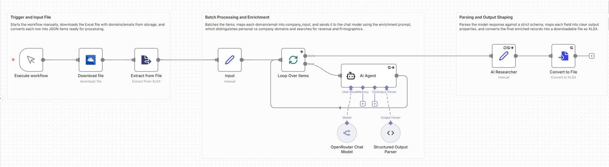

Turning Company Domains into Ready-to-Use B2B Data using N8N
Logeshkumar Sivakumar · January 1, 2026 · 4 min read

Manually turning a list of domains or emails into B2B company details is slow, repetitive, and hard to keep consistent. Manual research doesn’t scale. To avoid all that copy-paste work, this workflow uses n8n and an AI agent to automatically generate structured company profiles - name, industry, revenue, employees, country, and source details directly from those raw inputs.
What is an AI Agent?
An AI agent is a small system around a language model: it gets a clear role, rules, and tools, then returns structured output instead of free text. In this setup, the agent takes a domain or email and produces company name, industry, revenue (USD), employees, country, year, and revenue source details that other systems can consume safely.
What is n8n?
n8n is a workflow automation platform that connects APIs, databases, and AI models in a visual editor and can be self-hosted. It handles triggers, loops, retries, and output parsing, so the agent behaves like a reliable internal service instead of a one-off script living in someone’s notebook.
What this B2B Enrichment Workflow Does
The workflow focuses on turning raw domains/emails into structured company data:
- Triggers manually (or on a schedule) to start a new enrichment run.
- Downloads the input Excel file and converts it into JSON items.
- Loops over each item with a Split in Batches / Loop Over Items pattern for stability and rate-limit control.
- Calls the AI agent node wired to an external model and passes the enrichment prompt plus the current domain/email.
- Feeds the raw model output into a Structured Output Parser node that validates the JSON against a predefined schema.
- Uses a final Set node to normalize field names and then a Convert-to-File node to export the enriched results.

The Prompt Behind the AI Agent
The AI agent is driven by a carefully designed prompt that focuses on accurate revenue and clean structure, not just “best guess” text. At a high level, the prompt instructs the model to:
- Treat every non-free mail domain (anything except gmail/outlook/hotmail/yahoo/icloud) as a company and return full firmographic data.
- Prioritise official sources (annual reports, 10-K/20-F, regulatory filings) for revenue, then fall back to investor pages or reputable financial databases only when needed.
- Use only top-line revenue fields (e.g. “Total revenue”, “Net sales”) for a single fiscal year, with clear rules for units, currency conversion to USD, and year selection.
- Always output strict JSON with fixed keys (Domain, Company Name, Industry, Company Revenue in USD, Employees, Country, Year, Revenue Source, Revenue Source URL, Revenue Reliability), so n8n can parse it safely.
This prompt design is what makes the workflow useful for analytics tools like Power BI: you get machine-readable, source-backed numbers instead of unstructured AI guesses.
How to Implement it
Cloud
- Used n8n as the AI automation layer: visual workflow, looping, error handling, and structured output parsing.
- Self-hosted n8n on Render to scale up or down without managing servers directly.
- Used cron-job.org to ping the Render service on a schedule and keep the instance warm.
- Called free/low-cost models via OpenRouter, currently using Kwaipilot: KAT-Coder-Pro V1 as the main model for the enrichment agent.
- Wrapped everything in a strict JSON schema so downstream tools can trust the format.
On-Prem
- Install Node.js (version 20 LTS recommended) from nodejs.org
- Open Command Prompt or PowerShell
- Run: npx n8n start (no global install needed)
- Access n8n at through Localhost link provided in your browser
- Create your first workflow. No admin access or PATH changes required
- Global install alternative (It requires admin access)
npm install -g n8n
n8n
How it Helps
Most B2B teams still spend hours googling companies, skimming “About” pages, Wikipedia, ChatGPT/Copilot and copying numbers into spreadsheets - a process that is slow, inconsistent, and hard to audit later. This workflow changes that:
- Less manual research: a domain list becomes an enriched dataset in a single run instead of hours of tab-hopping.
- More consistent revenue data: the agent always follows the same rules about filings, fallback sources, and allowed revenue lines.
- Traceability: every record includes a revenue source description, URL, and reliability score, so values are reviewable and overridable.
- Easy integration: the output is a structured file (CSV/XLSX), ready to drop into existing CRMs, marketing tools, or data warehouses.
If you’re working with messy company lists and spending too much time cleaning data before it ever reaches Power BI, this kind of enrichment layer can sit quietly in the background and do the heavy lifting for you. It won’t replace your models or reports, but it can give them far better inputs.
If this resonates with the problems you’re trying to solve enriching domains, improving lead scoring, or just getting more trustworthy firmographics into your dashboards feel free to reach out. Always happy to compare approaches, exchange ideas, or even co-build similar workflows tailored to your stack.